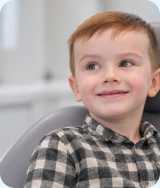
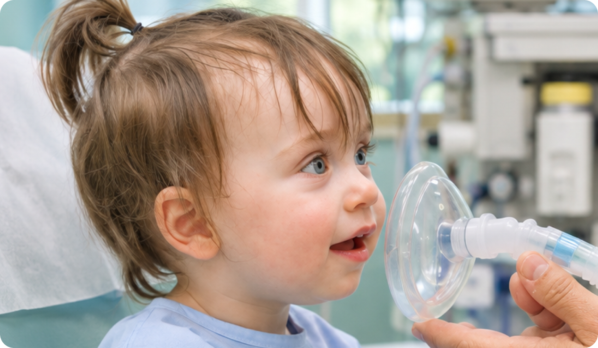

Пациент остаётся в сознании
Седация

Закись азота с кислородом помогает расслабиться и снизить волнение. Пациент слышит врача и может общаться с ним.

Помогаем пройти стоматологическое лечение спокойнее. Расскажем о двух методах, их различиях и подготовке.

Выбор метода
Седация помогает справиться с тревогой во время приёма. Общая анестезия позволяет провести лечение, пока пациент спит. Это разные методы, и они подходят для разных ситуаций.

Закись азота с кислородом помогает расслабиться и снизить волнение. Пациент слышит врача и может общаться с ним.

Применяется, когда лечение в сознании затруднено или необходим большой объём процедур. Состояние пациента контролирует анестезиолог.
На консультации стоматолог оценит объём лечения и особенности пациента. Возможность и вид анестезии определяются с учётом медицинских показаний и противопоказаний.
01 / Седация
Во время седации через небольшую носовую маску пациент вдыхает смесь закиси азота и кислорода. Это помогает уменьшить тревогу, сохраняя сознание и возможность общаться с врачом.
02 / Общая анестезия
Под общей анестезией пациент не осознаёт происходящее во время лечения. Такой метод может рассматриваться при большом объёме работы или когда лечение в сознании невозможно либо существенно затруднено.
Путь пациента
У каждого метода свои особенности. На консультации врач расскажет, какие этапы необходимы именно вам или вашему ребёнку.
Знакомимся, обсуждаем жалобы и составляем план стоматологического лечения.
Врач объясняет правила подготовки и при необходимости назначает обследования.
Проводим процедуры с выбранным методом анестезии и необходимым наблюдением.
Проверяем самочувствие и даём рекомендации по восстановлению и уходу.
Подготовка и наблюдение
Мы объясняем, как будет проходить процедура, и заранее выясняем всё важное для безопасного планирования лечения.
Учитываем состояние здоровья, аллергии, принимаемые препараты и особенности предстоящего лечения.
При общей анестезии анестезиолог-реаниматолог следит за дыханием и жизненно важными показателями.
После наркоза пациент отдыхает под наблюдением персонала до готовности к выписке.
Для восстановления после общей анестезии в «Метелице» предусмотрена отдельная комната. Ребёнок может отдыхать рядом с родителем.

Ориентир по стоимости
Стоимость зависит от способа и длительности анестезии. Стоматологическое лечение рассчитывается отдельно после осмотра и составления плана.
Ингаляционная седация закисью азота и кислородом.
Лечение во сне с наблюдением анестезиолога.
В прототипе цены не проставлены: их нужно сверить с действующим прейскурантом клиники. Точную стоимость и состав услуг уточните до записи.
Посмотреть общий прайсПолезно знать
Нет. Закись азота помогает уменьшить тревогу, но при болезненных процедурах может потребоваться местная анестезия.
Способ лечения выбирают по медицинским показаниям. Врач учитывает здоровье пациента, объём стоматологической помощи, возможность лечения в сознании и противопоказания.
Необходимые обследования определяет врач индивидуально. Их перечень зависит от возраста, состояния здоровья и планируемого лечения.
Анестезиолог заранее объяснит правила приёма пищи, питья и лекарств. Обязательно сообщите о хронических заболеваниях, аллергии и лекарствах, которые принимаете.
После общей анестезии пациент остаётся под наблюдением. Время выписки зависит от состояния и определяется медицинским персоналом.
Опыт пациентов
«Лечили ребёнку зубы в медикаментозном сне, всё прошло отлично. Перед процедурой всё подробно объяснили».Наталья Иванова, 24 августа 2022 Все отзывы